전자캐드기능사 (2014-10-11 기출문제)
1과목: 전기전자공학(대략구분)
1. T 플립플롭의 설명으로 옳지 않은 것은?
- 클럭 펄스가 가해질 때마다 출력상태가 반전한다.
- 출력파형의 주파수는 입력주파수의 1/2이 되기 때문에 2 분주회로 및 계수회로에 사용된다.
- JK플립플롭의 두 입력을 묶어서 하나의 입력으로 만든 것이다.
- 어떤 데이터의 일시적인 보존이나 디지털 신호의 지연작용 등의 목적으로 사용되는 회로이다.
(정답률: 63%)

2. 다음은 연산회로의 일종이다. 출력을 바르게 표시한 것은?
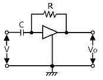
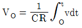
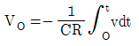
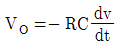
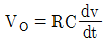
(정답률: 56%)
3. 트랜지스터가 정상 동작(전류 증폭)을 하는 영역은?
- 포화 영역(Saturation Region)
- 항복 영역(Breakdown Region)
- 활성 영역(Active Region)
- 차단 영역(Cutoff Region)
(정답률: 69%)
4. 다음과 같은 연산증폭기의 출력 e0는?
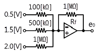
- -6[V]
- -10[V]
- -15[V]
- -20[V]
(정답률: 59%)
5. 4[Ω]의 저항과 8[mH]의 인덕턴스가 직렬로 접속된 회로에 60[Hz], 100[V]의 교류전압을 가하면 전류는 약 몇 [A]인가?
- 20[A]
- 25[A]
- 30[A]
- 35[A]
(정답률: 46%)
6. 다음 중 억셉터(Accepter)에 속하지 않는 것은?
- 붕소(B)
- 인듐(In)
- 게르마늄(Ge)
- 알루미늄(Al)
(정답률: 70%)
7. PN접합 다이오드의 기본 작용은?
- 증폭작용
- 발진작용
- 발광작용
- 정류작용
(정답률: 70%)
8. 다음과 같은 연산증폭기의 기능으로 가장 적합한 것은? (단, Ri=Rf이고 연산증폭기는 이상적이다)
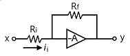
- 적분기
- 미분기
- 배수기
- 부호변환기
(정답률: 68%)
9. 이상적인 연산증폭기에 대한 설명으로 옳지 않은 것은?
- 대역폭은 일정하다.
- 출력저항은 0이다.
- 전압이득은 무한대이다.
- 입력저항은 무한대이다.
(정답률: 59%)
10. A급 저주파 증폭기의 최대 효율은 몇 [%]인가?
- 25[%]
- 50[%]
- 78.5[%]
- 100[%]
(정답률: 58%)
11. JK Flip-Flop에서 입력이 J=1, K=1일 때 Clock Pulse가 계속 들어오면 출력의 상태는?
- Toggle
- Set
- Reset
- 동작불능
(정답률: 68%)
12. 직렬형 정전압 회로의 특징에 대한 설명으로 틀린 것은?
- 경부하시 효율이 병렬에 비하여 훨씬 크다.
- 과부하시 전류가 제한된다.
- 출력전압의 안정 범위가 비교적 넓게 설계된다.
- 증폭단을 증가시킴으로써 출력저항 및 전압 안정계수를 매우 작게 할 수 있다.
(정답률: 52%)
13. 정류회로의 직류전압이 300[V]이고, 리플전압이 3[V]이었다. 이 회로의 리플률은 몇 [%]인가?
- 1[%]
- 2[%]
- 3[%]
- 5[%]
(정답률: 64%)
14. 변조도 “m＞1”일 때 과변조(Over Modulation) 전파를 수신하면 어떤 현상이 생기는가?
- 검파기가 과부화 된다.
- 음성파 전력이 커진다.
- 음성파 전력이 작아진다.
- 음성파가 많이 일그러진다.
(정답률: 61%)
15. 자체 인덕턴스 0.2[H]의 코일에 흐르는 전류를 0.5초 동안에 10[A]의 비율로 변화시키면 코일에 유도되는 기전력은?
- 2[V]
- 3[V]
- 4[V]
- 5[V]
(정답률: 42%)
2과목: 전자계산기일반(대략구분)
16. 이미터 접지 증폭회로에서 바이어스 안정지수 S는 얼마인가? (단, 고정바이어스임)
- β
- 1＋β
- 1-β
- 1-α
(정답률: 73%)
17. 다음 그림은 순서도의 기호를 나타낸 것이다. 무엇을 나타내는 기호인가?
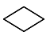
- 처리
- 판단
- 터미널
- 준비
(정답률: 74%)
18. 정적인 기억소자 SRAM은 무슨 회로로 구성되어 있는가?
- COUNTER
- MOSFET
- ENCODER
- FLIPFLOP
(정답률: 67%)
19. 다음 회로의 출력 결과로 맞는 것은? (단, A, B는 입력, Y는 출력이다)
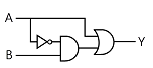
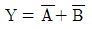
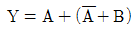
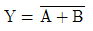
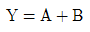
(정답률: 53%)
20. 마이크로프로세서의 내부 구성요소 중 산술연산과 논리연산 동작을 수행하는 것은?
- PC
- MAR
- IR
- ALU
(정답률: 72%)
21. 프로그램에서 자주 반복하여 사용되는 부분을 별도로 작성한 후 그 루틴이 필요할 때마다 호출하여 사용하는 것으로, 개방된 서브루틴이라고도 하는 것은?
- 매크로
- 레지스터
- 어셈블러
- 인터럽트
(정답률: 72%)
22. 16진수 D27을 2진수로 변환하면?
- 110101110010
- 110100100111
- 011111010010
- 011100101101
(정답률: 75%)
23. 컴퓨터에서 보수(Complement)를 사용하는 가장 큰 이유는?
- 가산과 승산을 간단히 하기 위해
- 감산을 가산의 방법으로 처리하기 위해
- 가산의 결과를 정확히 하기 위해
- 감산의 결과를 정확히 하기 위해
(정답률: 66%)
24. 컴퓨터시스템에서 자료를 처리하는 최소 단위는?
- 바이트(Byte)
- 비트(Bit)
- 워드(Word)
- 니블(Nibble)
(정답률: 79%)
25. 다음 중 “0”에서부터 “9”까지의 10진수를 4비트의 2진수로 표현하는 코드는?
- 아스키 코드
- 3-초과 코드
- 그레이 코드
- BCD 코드
(정답률: 69%)
26. 다음 중 컴퓨터를 구성하는 기본 소자의 발전 과정을 순서대로 옳게 나열한 것은?
- Tube – TR – IC
- Tube – IC – TR
- TR – IC – Tube
- IC – TR – Tube
(정답률: 64%)
27. 다음 괄호 안에 들어갈 용어로 알맞은 것은?
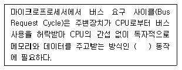
- Interrupt
- Polling
- DMA
- MAR
(정답률: 66%)
28. 다음 중 인간중심 언어인 고급언어가 아닌 것은?
- BASIC
- COBOL
- FORTRAN
- ASSEMBLY
(정답률: 64%)
29. 다음 중 인쇄회로기판의 특징이 아닌 것은?
- 대량 생산의 효과가 높다.
- 제품의 소형, 경량화에도 기여한다.
- 소량, 다품종 생산에는 제조 단가가 낮아진다.
- 제조의 표준화와 자동화를 기할 수 있다.
(정답률: 74%)
30. 다음 중 컴퍼스로 그리기 어려운 원호나 곡선을 그릴 때 사용되는 제도기구는?
- T자
- 삼각자
- 운형자
- 축척자
(정답률: 81%)
3과목: 전자제도(CAD) 이론(대략구분)
31. PCB 설계 시 부품배치 방법으로 옳지 않은 것은?
- 버스 라인의 흐름에 주의하여 IC를 배치한다.
- 배선이 많은 부품들은 기판의 외곽으로 배치한다.
- 커넥터 주변은 배선을 위한 충분한 공간을 확보한다.
- 극성 있는 부품은 삽입오류를 방지하기 위해 취급방향을 통일한다.
(정답률: 70%)
32. 회로도의 작성방법으로 옳지 않은 것은?
- 정해진 도 기호를 명확하면서도 간결하게 그려야 한다.
- 신호의 흐름은 도면의 오른쪽에서 왼쪽으로 한다.
- 전체적인 배치와 균형이 유지되게 그려야 한다.
- 신호의 흐름은 위에 아래로 흐르게 한다.
(정답률: 80%)
33. 다음 중 반도체 집적회로의 외형 패키지가 아닌 것은?
- PLCC 패키지
- SSUP 패키지
- DIP 패키지
- TQFP 패키지
(정답률: 43%)
34. 전자 부품은 크게 능동 부품(Active Component)과 수동 부품(Passive Component)으로 나눌 수 있는데 다음 중 능동 부품이 아닌 것은?
- 다이오드(Diode)
- 트랜지스터(TR)
- 집적회로(IC)
- 저항기(R)
(정답률: 72%)
35. 제조가 완료된 PCB를 전기적, 광학적으로 검사하기 위한 과정은?
- CAD
- CAM
- CAE
- CAT
(정답률: 50%)
36. 다음 집적회로의 종류 중 집적도(소자수)가 가장 많은 것은?
- LSI
- SSI
- MSI
- VLSI
(정답률: 79%)
37. 도면을 내용에 따라 분류했을 때 여러 개의 전자제품이 상호 접속된 상태를 나타내는 도면은?
- 부품도
- 공정도
- 부분조립도
- 전자회로도
(정답률: 63%)
38. 제도용지에서 A3 용지의 규격으로 옳은 것은? (단, 단위는 [㎜])
- 210 x 297
- 297 x 420
- 420 x 594
- 594 x 841
(정답률: 77%)
39. 다음 중 전자 CAD용 프로그램(EDA툴)이 아닌 것은?
- OrCAD
- CADSTAR
- AutoCAD
- Altium Designer
(정답률: 58%)
40. 세라믹 콘덴서의 외부에 103의 숫자가 적혀있다. 이 콘덴서의 용량은?
- 1[㎌]
- 0.1[㎌]
- 0.01[㎌]
- 0.001[㎌]
(정답률: 69%)
41. 다음 중 새로운 부품을 생성하고자 할 때, 반드시 거쳐야 하는 과정이 아닌 것은?
- 부품의 정의
- 부품 디자인
- 부품의 핀 배치
- 부품의 크기 변경
(정답률: 50%)
42. 수정(Crystal) 진동자의 기호로 맞는 것은?
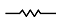
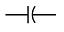
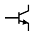
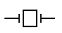
(정답률: 83%)
43. 다음 중 전자통신기기의 패널을 설계 제도할 때 유의할 점으로 옳은 것은?
- 전원 코드는 전면에 배치한다.
- 조작상 서로 연관이 있는 요소끼리 근접 배치한다.
- 조작 빈도가 낮은 부품은 패널의 중앙이나 오른쪽에 배치한다.
- 장치에 외부 접속기가 있을 경우 반드시 패널의 위에 배치한다.
(정답률: 57%)
44. 다음 중 출력장치로 볼 수 없는 것은?
- 마우스
- 플로터
- 프린터
- 모니터
(정답률: 79%)
45. 제도에서 사용하는 길이의 단위로 옳은 것은?
- ㎜(밀리미터)
- cm(센티미터)
- m(미터)
- km(킬로미터)
(정답률: 84%)
46. 인쇄회로기판(PCB) 설계용 CAD에서 일반적인 배선 알고리즘이 아닌 것은?
- 스트립 접속법
- 고속 라인법
- 인공지능 탐사법
- 기하학적 탐사법
(정답률: 66%)
47. 다음 중 PCB 레이아웃 설계과정이 아닌 것은?
- 회로도면 설계
- 부품배치
- Spice 시뮬레이션
- Post Processing
(정답률: 61%)
48. 다음 기호의 명칭으로 옳은 것은?
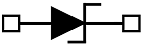
- SCR
- Triac
- UJT
- Zener Diode
(정답률: 79%)
49. 다음 중 검출용 기구가 아닌 것은?
- 근접 스위치
- 실렉트 스위치
- 광전 스위치
- 압력 스위치
(정답률: 52%)
50. 도면을 작성할 때 실물보다 작게 그리는 척도는?
- 실척
- 현척
- 축척
- 배척
(정답률: 83%)
51. 인쇄회로기판 설계 시 랜드를 설계하려고 한다. D=3.0[mm], d=1.0[mm]일 때 랜드의 최소 도체너비(W)는?
- 0.5[mm]
- 1[mm]
- 1.5[mm]
- 2[mm]
(정답률: 43%)
52. 다음 중 도면으로부터 좌표를 읽어 들이는데 사용하며, 자기장이 분포되어 있는 평판에 위치 검출기를 위치시켜 도면이 위치에 대응하는 X, Y좌표를 입력하거나 원하는 명령어를 선택하는 입력장치는?
- 디지타이저
- 이미지 스캐너
- 마우스
- 포토 플로터
(정답률: 76%)
53. 다음 그림과 같이 표현하는 도면 표시 방법은?
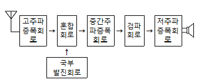
- 회로도
- 계통도
- 배선도
- 접속도
(정답률: 69%)
54. 회로도 작성 시 고려사항 중 옳지 않은 것은?
- 주회로와 보조회로가 있는 경우에는 보조회로를 중심으로 설계한다.
- 회로도는 주요 능동소자를 중심으로 그린다.
- 대칭으로 동작하는 회로는 접지를 기준으로 대칭되게 그린다.
- 선의 교차가 적고 부품이 회로도 전체에 안배되도록 그린다.
(정답률: 72%)
55. PCB 설계 시 전자 부품의 피치가 100[mil]이었다면, 이를 [㎜]로 환산하면?
- 0.254[㎜]
- 2.54[㎜]
- 0.0254[㎜]
- 0.00254[㎜]
(정답률: 67%)
56. 여러 나라의 공업규격 중에서 국제표준화 기구의 규격을 나타내는 것은?
- ISO
- ANSI
- JIS
- DIN
(정답률: 84%)
57. PCB Artwork에서 부품을 꽂는 부분이 동박면은?
- Hole
- Point
- Pad
- Line
(정답률: 56%)
58. CAD용 컴퓨터의 데이터 버퍼에 대한 설명으로 옳은 것은?
- 출력작업이 이루어지는 동안에도 다른 작업을 행할 수 있다.
- 주변장치와 8[Bit] 병렬 데이터 통신을 하기 위한 인터페이스이다.
- 사용자 정의 형상을 컴퓨터가 이해할 수 있는 수치로 나타낸다.
- 36핀 커넥터로 되어있다.
(정답률: 53%)
59. 쌍방향성 다이오드(다이액)의 기호는?
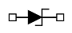
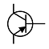
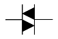
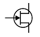
(정답률: 84%)
60. 패드와 패드를 연결하면서 트랙의 층을 변경할 때 생기는 원형 동박의 명칭을 무엇이라고 하는가?
- 드릴
- 랜드
- 솔더 마스크
- 비아
(정답률: 55%)
T 플립플롭은 클럭 펄스가 가해질 때마다 출력상태가 반전하는 특징을 가지며, 출력파형의 주파수는 입력주파수의 1/2이 되기 때문에 2 분주회로 및 계수회로에 사용됩니다. 또한 T 플립플롭은 어떤 데이터의 일시적인 보존이나 디지털 신호의 지연작용 등의 목적으로 사용되는 회로입니다.